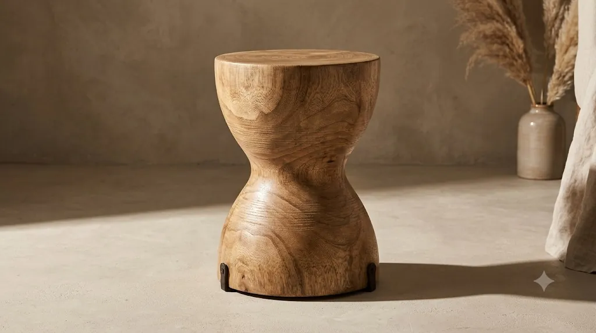

Turned Hardwood Spool Stool / Side Table
Masterfully crafted in Jodhpur for high-volume international export, the Turned Hardwood Spool Stool / Side Table reflects Japandi Sculptural sensibilities engineered for retail success at Lulu and Georgia, CB2. Features Sculptural solid turned single-block mango hour-glass accent table with wire-brushed wax. Constructed exclusively from certified sustainable timber kiln-dried to strict 8–10% moisture equilibrium to prevent warping across diverse North American and European climates. Accompanied by electrostatically coated, corrosion-resistant ironwork with seamless hand-welded joins. Every piece is individually wrapped, buffered with high-density EPS edge guards, and boxed in an ISTA-1A drop-tested 5-ply export master carton (unit volume: 0.055 CBM). Fully compliant with the US Lacey Act, VRIKSH timber legality verification, and EUDR deforestation due diligence regulations.
| Material & construction | Sculptural solid turned single-block mango hour-glass accent table with wire-brushed wax |
|---|---|
| Dimensions | Dia 14" x 18" / Dia 35 x 46 cm |
| Carton volume | 0.055 CBM / unit |
| Minimum order | 25 Pcs |
| Lead time | 45–60 Days (FOB Mundra) |
| Western retail benchmark | $175 – $230 |
| Style | Japandi Sculptural |
| Indicative HS heading | 9403.60 — Other wooden furniture |
| Typical buyers | Lulu and Georgia, CB2 |
Indicative HS heading only — your customs broker confirms final classification. Kiln-dried 8–10% moisture, ISPM-15 dunnage, VRIKSH / Lacey / EUDR paperwork on request.